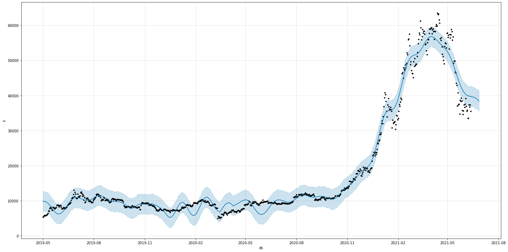
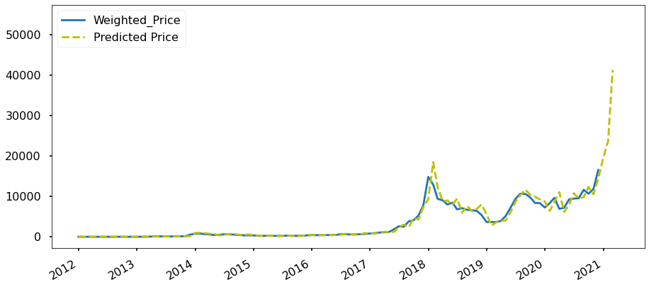
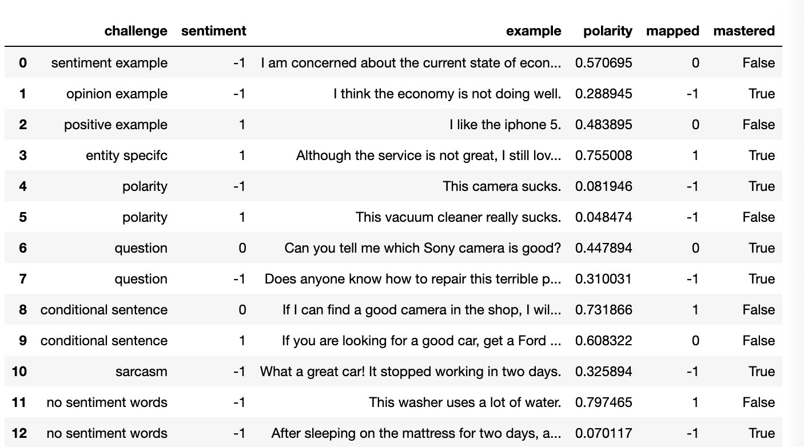

3. Trend Based On AI
我们希望借助机器学习和深度学习来预测加密硬币的价格。为了简化我们的任务，我们选择BTC作为我们的试点，然后选择ETH。我们的目标是预测未来十大加密币的价格。我们利用混合机器学习技术、公众情绪和监管政策建立了一个时间序列预测密码币价格的理论
3.1 机器学习
在进行时间序列预测时，人们通常只利用历史数据对变量进行预测。传统的时间序列预测模型如自回归综合移动平均（ARIMA）更适合于单变量和平稳的时间序列数据。但BTC价格具有高度的波动性、非线性和非平稳性。由于其快速变化的性质，我们需要添加新的功能结合传统的机器学习模型来预测BTC的价格。
我们的目标是估计目标变量x在未来时间点的值𝑥̂ [𝑡+𝑠] = 𝑓(𝑥[𝑡],𝑥[𝑡−1],...,𝑥[𝑡−𝑛]),𝑠>0，s是预测的地平线。第一步，我们将重点放在开始时的短期预测上，这意味着我们将考虑每日收盘价预测，并将短期（日终和次日）的价格上涨/下跌预测作为预测的范围。我们的长期目标是预测7-30天。
至于机器学习算法，我们使用以下ML模型进行分类和回归：
- Fb prophet
- 支持向量机(SVM)
- 人工神经网络(ANN)
- 叠层人工神经网络(SANN)
- 长短期记忆(LSTM)
分类如下：如果BTC每日收盘价𝑃𝐵𝑇𝐶[𝑡+1]−𝑃𝐵𝑇𝐶[𝑡]≥0那么𝑦[𝑡]=+1，如果𝑃𝐵𝑇𝐶[𝑡+1]−𝑃𝐵𝑇𝐶[𝑡]<0，那么𝑦[𝑡]=0，其中y[t]是涨价和降价类别的目标变量。其中y[t]是涨价和降价类别的目标变量。回归模型用于预测BTC价格在一天结束和第二天的预测范围内，并将花费7-30天的长期计划。
对于这一部分，我们可以从Coinmarketcap、区块链信息等获取数据。
下面的图片显示了一个演示，使用先知预测BTC价格的基础上超过1年的历史数据。

我们做的另一个演示是在SARIMA的帮助下，根据分钟单位历史数据（表2012-01-01至2021-03-31）进行预测。下一张图显示了预测结果，即2021-04年BTC价格将大幅上涨。

3.2 公众情绪
另一方面，我们也需要收集社会数据和公众情绪数据。像“贪婪”或“恐惧”这样不同的情绪意味着对“买入”或“卖出”BTC的不同态度。情感分析是从普通语言文本中提取个体主观观点极性的系统。情感分析包括将文本中的观点划分为“积极”或“消极”或“中立”等类别。
我们需要从一些热门的加密货币平台获取公众情绪数据：
- Google Trends
- Telegram
- ...
对于所有的情绪数据，下一步就是对其进行清理，然后提取有用的信息，填入统一的情绪分析模板中。
普通人的情绪和公众人物伊隆·马斯克完全不同。大牌的人气可能带来BTC价格的大幅上涨/下跌。显然，这对一个正常人来说是不可能的。因此，我们有一个公众大牌的名单，并赋予他们的预测更高的权重。
对于这一部分，有一个非常著名的情绪分析的挑战来自Liu (2015): Sentiment Analysis : Mining Opinions, Sentiments, and Emotions. Cambridge University Press，我们正试图通过一些模型来解决它，如Textblob，朴素贝叶斯等。图片显示，我们正试图通过文本Bulb解决挑战。该模型掌握了7/13（53.8%）的情绪分析挑战，这意味着该方法是一个可接受的模型，可以在我们的系统中使用。

3.3 监管政策
BTC价格在很大程度上取决于监管政策，例如拜登提议的税收导致比特币价格下跌，以及中国禁止加密业务导致比特币价格下跌。这一部分可能会对BTC价格产生极大的影响，甚至应给予比公众人物更高的权重。有很多方法可以得到这样的消息。为了简化这类数据的数据摄取。我们可以从Twitter、微博和其他社交媒体上获得一些关键国家的官方渠道的监管新闻。我们需要遵循同样的流程来清除、清理和提取有用的信息，然后将其填入有关监管政策的模板中。一个关键的观点是，一些监管政策可能会长期影响加密币的价格，甚至可能将牛市转为熊市，反之亦然。为了识别此类政策，我们有一个非常重要的子任务，即找出此类新闻和政策，并通过机器学习进行分析，并将结果反馈给BTC价格预测。
3.4 解决方案设计
我们将建立基于AWS的整个预报系统。AWS有一些PaaS服务，比如EMR、机器学习和EKS可以帮助我们简化taka并实现我们的目标。以下是我们想展示的一些要点：
- BTC硬币价格和交易数据采集然后运行ETL并将其放入S3桶中。
- 舆情数据采集，运行ETL，放入S3桶。
- 监管数据摄取，然后运行ETL并将数据馈入S3存储桶。
- 为列车和试验拆分数据集。
- 训练和验证分类模型。
- 训练和验证回归模型。
- 使用分类模型预测价格涨跌。
- 运用回归模型预测价格走势。
- 把我们的研究成果放到我们的社区，和我们的用户一起加入游戏。
图为解决方案的详细信息。

3.5 参考文献
- A. Saxena and A. Sukumar, "Predicting bitcoin price using lstm And Compare its predictability with arima model," International Journal of Pure and Applied Mathematics, vol. 119, no. 17, 2018, pp. 2591- 2600.
- Suhwan Ji, Jognmin Kim and Hyeonseung Im, "A Comparative Study of Bitcoin Price Prediction Using Deep Learning"， DOI:10.3390/math7100898
- "Understanding LSTM Networks -- colah's blog," 27 August 2015. [Online]. Available: http://colah.github.io/posts/2015-08-Understanding-LSTMs/.
- Chen Z, Li C, Sun W (2020) Bitcoin price prediction using machine learning: an approach to sample dimension engineering. J Comput Appl Math 365:112395
- Hyndman RJ, Athanasopoulos G (2018) Forecasting: principles and practice, 2nd edn. OTexts, Melbourne, Australia. https://otexts.com/fpp2/. Accessed 2 July 2020
- Liu (2015): Sentiment Analysis : Mining Opinions, Sentiments, and Emotions. Cambridge University Press